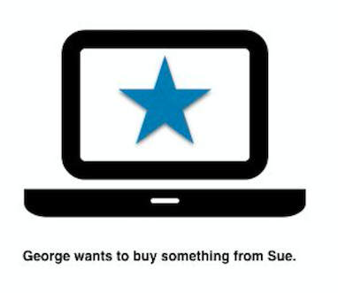
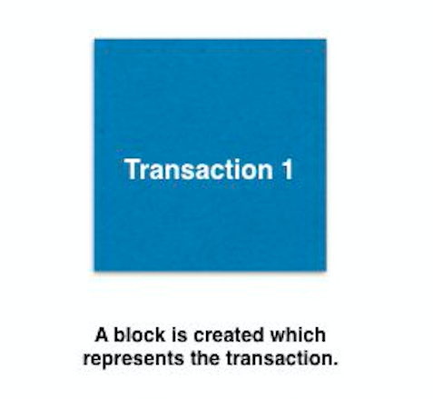
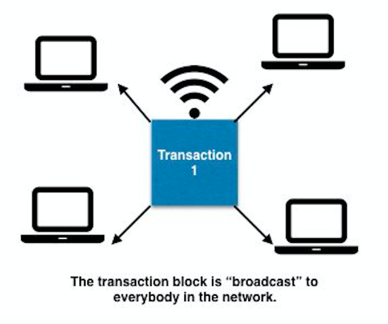
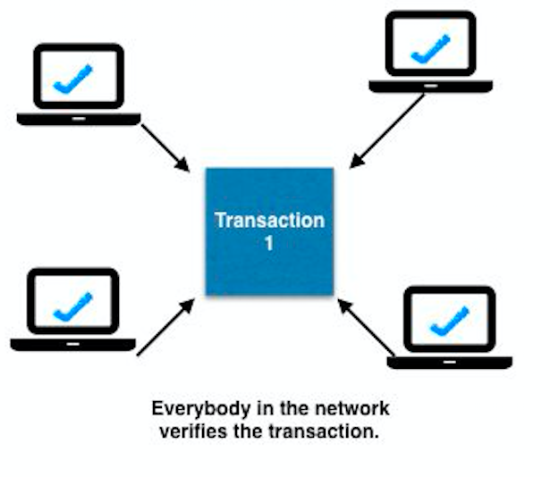
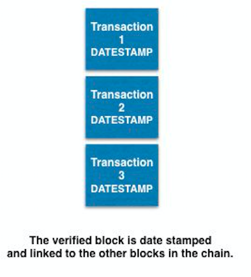
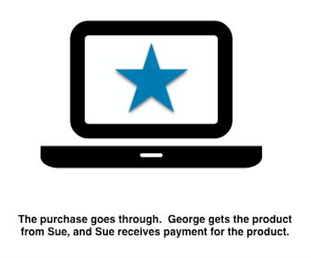

An Introduction to Bitcoin
By: Raunak Chowdhury and Rubin Peci
Softdev pd8
Why Did Bitcoin Come About?
- Our modern-day financial systems are based entirely on trust
- You must trust a third-party, a bank, to make sure money gets from one person to another
- You must trust a bank to secure your funds
- Though this seems like common sense, people are finding it increasingly harder to trust financial institutions to have our best interests at heart
- For a modern-day example, the 2008 crash is an excellent case of our banks making irresponsible decisions out of their own greed.
This was one answer to the 2008 Recession:
A purely peer-to-peer version of electronic cash would allow online payments to be sent directly from one party to another without going through a financial institution.
So what's the value of Bitcoin?
A few things:
- It's decentralized by default, meaning that no one can control it; this increases trust in the currency.
- Currency can be easily exchanged across borders and eliminates the middleman
- It's apolitical and doesn't favor any group of people, meaning that an unstablized government will not cause BTC to collapse.
But...how does it work?
Good question! It uses something called a blockchain. In essence, a blockchain is an encrypted, decentralized ledger of business transactions. Let's go through them in detail.

First, two people order a transaction to happen (in this case George purchases something from Sue).

Do note that each block is a list of transactions, rather than each block being its own individual transaction.

This is where the decentralized aspect of the blockchain comes into play —- the rest of the network listening in recieves the block.

In Bitcoin's blockchain, this is done through a computation competition in which computers (nodes) compute extremely difficult problems that are easy to check the solutions for. Once a node reaches the correct solution, that person is awarded a sum of Bitcoin (12.5 currently). This is what is commonly known as "mining."

In the Bitcoin blockchain's case, the winner signs the block with a hashcode (this is called proof-of-work), and the block is hashed with a reference to the previous block (much like a linked list) and added to the chain (hence the name blockchain -- WOW I know right.)

This payment goes through, but not instantanouesly. For Bitcoin's blockchain, this entire process takes about 10 minutes per block, meaning that the transaction only goes through after those 10 minutes. This is useful for applications in which it may take days to process invoices and/or payments.
Technology behind Bitcoin
Cryptograpy
- First published in the 1970s by Martin Hellman, Whitfield Diffie, and Ralph Merkle
- A monumental breakthrough that got the public interested in cryptography
- Prior to this, strong cryptographic knowledge was kept secret by governments
- Based on mathematical functions with a special property - easy to verify, virtually impossible to calculate their inverse
That last property is commonly shown as...
P ≠ NP
This technology is what makes Bitcoin possible. Wallet technology relies entirely on cryptography. But what are "wallets" and what do they do for Bitcoin?
A wallet, for the user, is how their BTC is stored, and how they access it. A wallet is comprised of two keys - a private key, and a public key derived from the private key.
A private key can be any non-zero random number that can go up to slightly less than 2256. The public key is then generated by performing the following operation
Where "K" is the public key, "k" is the private key, and "G" is a constant, referred to as the "generator point." However, the multiplication sign doesn't represent the multiplication that we typically see in arithmatic. It represents multiplication on an elliptical curve, which is completely different, and more importantly, nearly impossible to reverse. It fits the P ≠ NP property that we mentioned before.
To receive BTC, people simply share public keys to one another, while keeping the private key completely safe and hidden. The public key is safe to share and broadcast, but the private key must be protected as it provides access to all the BTC that has been sent to the associated public key.
IDGI -- What makes a Bitcoin so valuable then?
Glad you asked! Here's were the value of BTC stems from:
- A static market cap of 21 million BTC, which introduces scarcity.
-
Seguing from the last bullet point, the last Bitcoin will be produced (see the blockchain diagram above) around 2100. This means that the supply will remain constant, making it a commodity.
- As of right now, around 16.8 million BTC (78%) are in existence.
- It is uncontrolled by any force, meaning that people in countries with unstable economies like Venuzuela will be drawn to Bitcoin.
- The extensive PR coverage that Bitcoin has been recieving over the past few years has sparked more interest, driving the price of 1 BTC upward.
Sounds really cool! Are there any negatives?
Yes, unfortunately. It's not without its downsides.
-
To solve these computationally complex problems, Bitcoin "miners" turn to incredibly specialized processors, called Application Specific Integrated Circuits.
This allows miners to mine at a more efficient pace. The issue is that one company, Bitmain, holds a market monopoly over these ASIC chips, meaning that the success of the Bitcoin blockchain
is dependent on just Bitmain.
-
Mining by yourself is inefficient. As a result, miners combine their processing power and form mining pools, which have increased computational power; the 12.5 BTC won is
split among the miners. The issue is that Bitmain also uses their own chips to mine Bitcoin for themselves before selling them off to the market, and they have also joined mining pools.
Consequently, they control 2 out of the 3 major mining pools in existence, which poses a major threat in the form of a
51% attack, where the group that holds at least 51% of the entire pool's power would be able to stall the blockchain's transactions
by modifying their own computational speeds.
-
As hinted at in the last bullet, mining has become unprofitable for the average miner looking to make some quick money. To mine Bitcoin is a computationally-intensive process that guzzles electricity,
driving prices up. Multiple states in the US have clashed with miners trying to take advantage of cheaper electricity to mine Bitcoin and other crypto. It is expected that the cost of attempting to mine
will outweigh the gains in a year.
-
Bitcoin is also reputed for its anonymity, which has been used by black market dealers to ship drugs without fear of being caught. Such trades represent the dark side of the blockchain mechanism.
-
A lot of companies tend to slap "blockchain" onto their startups and call it a "software solution." As a result, blockchain has gotten a lot of bad press because of scammers claiming to be making the
next "revolutionary product powered by innovative tech" and for being a "buzzword." See
Long Island Blockchain, which is actually a tea company that
rebranded itself to take advantage of the stock market hype!
So...is there any reason to having this discussion about blockchain?
Yes! You see, this is only one variant of blockchain. In 2015, Ethereum -- a blockchain based on the idea of smart contracts, contracts
programmed directly into the blockchain -- debuted, changing the blockchain industry. Ethereum marketed itself as a platform for building decentralized applications, ushering in tons of new ideas!
Here's some of the developments going on right now:
-
Companies like Amazon, Google, and IBM are actively
creating and investing into blockchain
- Ethereum and smart contracts have hit the market and become mainstream
-
Smart contracts are being legally recognized by states, such as Wyoming
and Tennessee!
-
JP Morgan released the Quorum blockchain (it's open source too; click here to see the repo)
as well as the JP Morgan Coin!
- Companies like Livepeer and Consensys have become major companies within the industry
- Increased access -- many universities offer blockchain/cryptocurrency classes, and NYU Stern allows for a concentration in blockchain/cryptocurrency!
- Other nonprofits for helping with teenage access to blockchain, such as she(256), Blockchains at Berkeley, Blockchains@Columbia, and BlockchainsForSchools are all on the scene!
Here's an image from BlockchainsForSchools' session with the Quorum team last Monday!

(Yes, we know, shameless plug, but you already knew that was coming if you recognized our names. Both of us are even in the picture.)